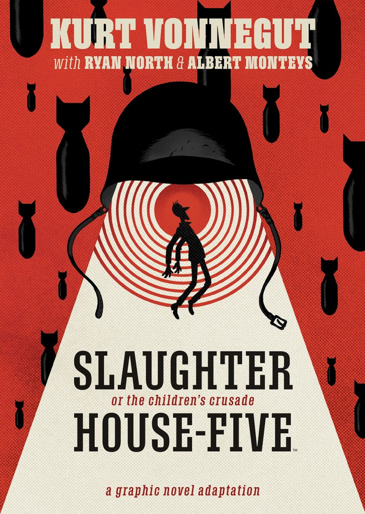

Irwin Chen’s Profile
About Me
Irwin Chen was born in Nashville, Tennessee. He is currently the Design Lead at the Journalism + Design Program at The New School.
Irwin’s Most Used Emojis
- 🙄
- 🤔
- 😢
- 😱
- 💩
What I’m Reading
What I’m Listening To
Stevie Wonder